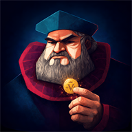

Manual de Regras
Promoções, Reforma e variantes para mesa casual.
Página 1
Coup Master Voltar ao labProtótipo de manual
Um laboratório em HTML para testar leitura de regras com efeito de livro, sem iframe externo e sem depender de PDF.
Promoções, Reforma e variantes para mesa casual.
Página 1Este protótipo usa páginas HTML comuns. O conteúdo pode virar um manual oficial, um guia rápido ou uma central de regras alternativa.
Teste: use os botões laterais, os botões inferiores ou as setas do teclado para virar páginas.
Duque - Taxar: pegue 3 moedas do tesouro central. Não pode ser bloqueado.
Capitão - Extorquir: pegue 2 moedas de um oponente. Pode ser bloqueado por Capitão, Embaixador ou Bufão.
Assassino - Assassinar: pague 3 moedas e escolha um oponente para perder 1 influência. Pode ser bloqueado pela Condessa.
Condessa - Persuasão: bloqueia qualquer Assassinato direcionado a você. Não pode ser bloqueada.
Embaixador - Trocar: pegue 2 cartas e devolva 2 cartas para o deck. Não pode ser bloqueado.
Inquisidor: compre 1 carta e devolva 1 carta ao baralho, ou investigue uma carta de outro jogador e force ou não a troca.
Duque: Taxar pega 3 moedas e também bloqueia Tributação do Tesoureiro contra si.
Assassino: Assassinar pode ser bloqueado pela Condessa ou pelo Diplomata.
Condessa: bloqueia Assassinato direcionado a você e a Negociação do Diplomata.
Inquisidor: Investigar pode ser bloqueado pelo Bispo.
Use esta página quando o baralho estiver misturando cartas base com Revolução, Asilo ou personagens promocionais.
Página 4Bufão - Desordem: pegue 1 carta do deck e 1 de um adversário; troque uma delas por uma sua e devolva as outras. Bloqueia Extorsão e Desordem.
Burocrata - Cooperação: pegue 3 moedas do Tesouro Central e entregue 1 moeda para um adversário. Bloqueia Ajuda Externa.
Benfeitor - Redistribuição: tira 3 moedas do jogador mais rico e entrega ao mais pobre. Benfeitores podem bloquear a ação.
Burguês - Dividendos: pega 4 moedas. Declarantes não contestados recebem 1 moeda do jogador ativo.
Marionetista - Puxar Fios: pague 3 moedas e escolha um jogador; você decide a próxima ação dele, exceto Golpe de Estado. O efeito termina após essa ação ou se o Marionetista morrer.
Diplomata - Negociar: pague 2 moedas e escolha dois jogadores. Até seu próximo turno, eles não podem usar ações um contra o outro. Pode ser bloqueado pela Condessa.
Diplomata - Interceder: bloqueia Execução Bruta contra si.
Mercenário - Execução Bruta: pague 5 moedas para eliminar qualquer carta. Pode ser bloqueado pelo Diplomata.
Tesoureiro - Tributação: ganhe 2 moedas; todos os outros jogadores pagam 1 moeda ao banco. Pode ser bloqueado pelo Duque.
Bispo - Expurgar: pague 2 moedas. O alvo revela uma influência, envia ao cemitério e compra nova carta. Bloqueia Inquisidor contra si.
Vigilante - Vingança: cobre 2 moedas de quem usou ação ofensiva contra você desde seu último turno. Se não puder pagar, revela uma influência.
Pistoleiro - Cabeça a Prêmio: pague 2 moedas e escolha um alvo. Outro jogador pode pagar 2 moedas para fazer o alvo perder 1 influência. Pode ser bloqueado pelo Xerife.
Magnata - Suborno: troque uma carta com o baralho. Você pode pagar X moedas para comprar X cartas extras, escolher uma e devolver o restante.
Estrategista - Manobra: receba 2 moedas e troque uma de suas cartas com outro jogador.
Ladrão - Roubo: pegue 1 moeda de cada jogador. Outros Ladrões bloqueiam o roubo contra si.
Vigarista - Fortuna Arriscada: dobre suas moedas, até o máximo de 5. Se for contestado e perder, entregue todas as moedas ao desafiante.
Xerife - Procurado: pague 1 moeda e escolha um jogador. Até seu próximo turno, ações ofensivas dele que custem moedas custam 2 a mais. Bloqueia Cabeça a Prêmio contra qualquer jogador.
Você pode jogar com um ou dois personagens promocionais.
Bufão - Desordem: compre 1 carta do Baralho da Corte e uma carta de um adversário escolhida por ele. Troque, devolva uma carta ao baralho e outra ao adversário.
Burocrata - Cooperação: pegue 3 moedas do Tesouro Central e entregue 1 moeda para um adversário.
Você pode jogar com um ou dois personagens promocionais.
Benfeitor - Redistribuição: pegue 3 moedas do jogador com mais moedas e entregue ao jogador com menos moedas.
Burguês - Dividendos: pegue 4 moedas. Outros jogadores podem declarar Burguês e receber 1 moeda do jogador ativo se não forem contestados com sucesso.
A Reforma adiciona religiões ao jogo: Católicos e Protestantes. Exceto pelas mudanças abaixo, o modo de jogar e vencer permanece o mesmo.
Um jogador não pode aplicar Golpe de Estado, Assassinar, Extorquir ou bloquear Ajuda Externa de outro jogador da mesma religião, a menos que todos estejam na mesma religião.
Página 12Conversão: pague 1 moeda para mudar sua religião ou 2 moedas para mudar a religião de outro jogador. As moedas vão para o Asilo.
Corrupção: alegue não possuir o Duque e pegue todas as moedas do Asilo. Qualquer jogador pode contestar.
Se o jogador contestado possuir o Duque, ele perde a contestação, devolve as moedas ao Asilo e perde uma influência.
Se não possuir o Duque, ele revela suas influências, o desafiante perde uma influência e as cartas reveladas são substituídas aleatoriamente.
Página 13Substitua o Embaixador pelo Inquisidor e coloque o marcador no centro da mesa com o lado do Inquisidor virado para cima.
O marcador determina o comportamento do Duque. Na face dos Duques, o jogo funciona com as regras normais.
Inquisidor: quando alguém usa Taxas do Duque, outro jogador pode reivindicar o Inquisidor. O Duque paga 1 moeda para esse jogador e recebe apenas 2 moedas do Tesouro Central.
Se mais de um jogador reivindicar o Inquisidor, quem tiver menos dinheiro tem preferência. Em empate, o Duque escolhe.
Página 14Pague 1 moeda para o Tesouro Central e vire o marcador.
Próximo passo: este lab pode virar um manual completo com índice, imagens das cartas, páginas por expansão e exportação futura para PDF.
Observação: este protótipo é uma alternativa ao iframe de PDF. Ele mantém o conteúdo em HTML, facilita revisão de texto e pode ser integrado depois ao Coup Master.